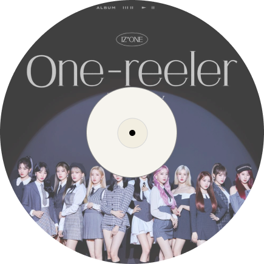
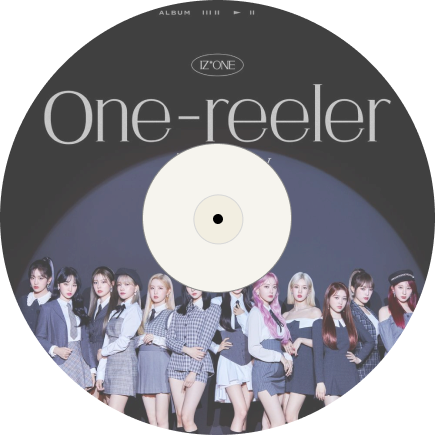

Sometime 영화처럼
가장 아름다운 장면 그 중심에서
초침이 멈추면 날 데려가
꿈같은 너의 세상을 걷고 싶어 난
네 일상이 내겐 이상일 거야
마치 우린 환상 속의 주인공일 거야 Like a film
보이는 모든 걸 내 눈에 담아 둘래 Ay Yeah
들리는 모든 걸 여기에 새길래 더 완벽하게
나의 모든 맘을 맡길 때
다른 소리들이 그칠 때
나의 Film에 쓰여지는
너와 나만의 Mise-en-Scène
내 가장 아름다운 Scene에
꿈처럼 너의 그림자에 닿는다
달이 날 비추면 가장 아름다운 말로
우리의 Story를 만들어 가면 돼
The Mise-en-Scène
너와 내 공간의
Mise-en-Scène
너와 나만의 Mise-en-Scène
Sometime 한순간 속의 Frame 안에서
또 다른 세계가 열릴 것 같아
모든 것이 낯설겠지만 내 이름을 기억해
길을 잃어도 날 찾을 수 있게 Oh Yeah
너의 일상이 내겐 이상일 거야
마치 우린 환상 속의 주인공 일거야 Like a film
초침이 멈추면 나를 데려가 줄래 Ay Yeah
꿈같은 너의 그 세상에 가볼래 더 완벽하게
나의 모든 맘을 맡길 때
다른 소리들이 그칠 때
나의 Film에 쓰여지는
너와 나만의 Mise-en-Scène
내 가장 아름다운 Scene에
꿈처럼 너의 그림자에 닿는다
달이 날 비추면 가장 아름다운 말로
우리의 Story를 만들어 가면 돼
The Mise-en-Scène
너와 나만의 Mise-en-Scène
모든 세상의 색이 물감처럼 번지면
제일 예쁜 옷을 입고 너를 만날 거야
가장 멋진 연출로
아름다운 우리 만의 공간에 닿았을 때
너와 나만의 Mise-en-Scène
내 가장 아름다운 Scene에
꿈처럼 너의 그림자에 닿는다
달이 날 비추면 가장 아름다운 말로
우리의 Story를 만들어 가면 돼
The Mise-en-Scène
너와 내 공간의
Mise-en-Scène
너와 나만의 Mise-en-Scène
IZ*ONE - Mise-en-Scène
 
